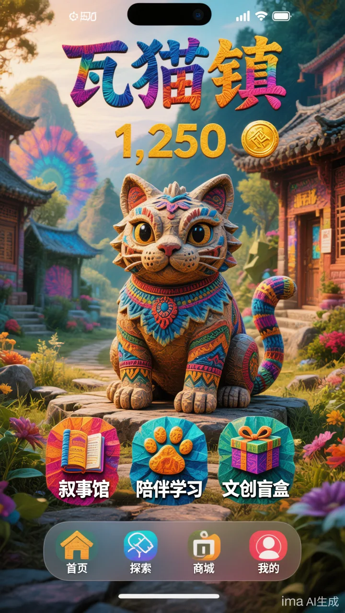
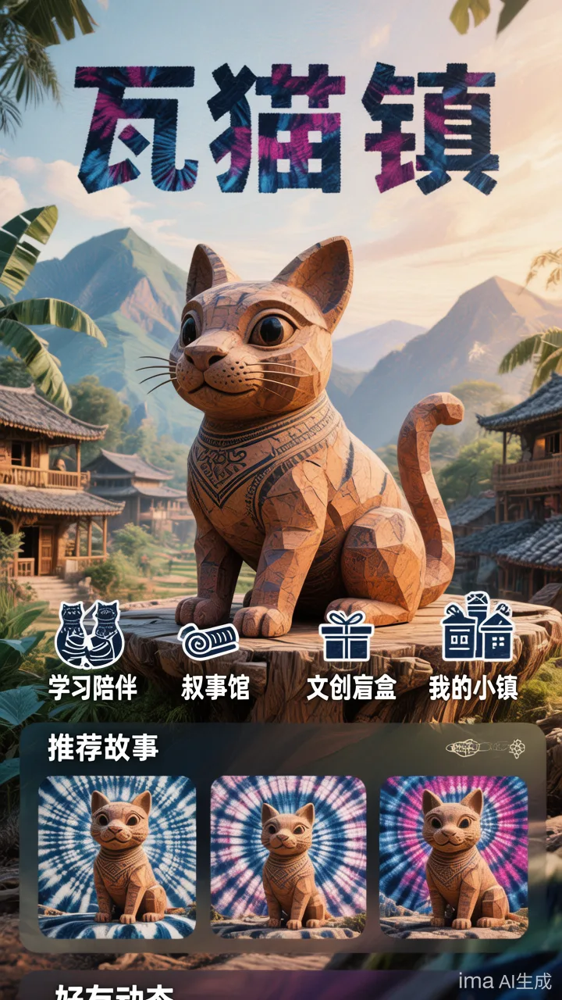
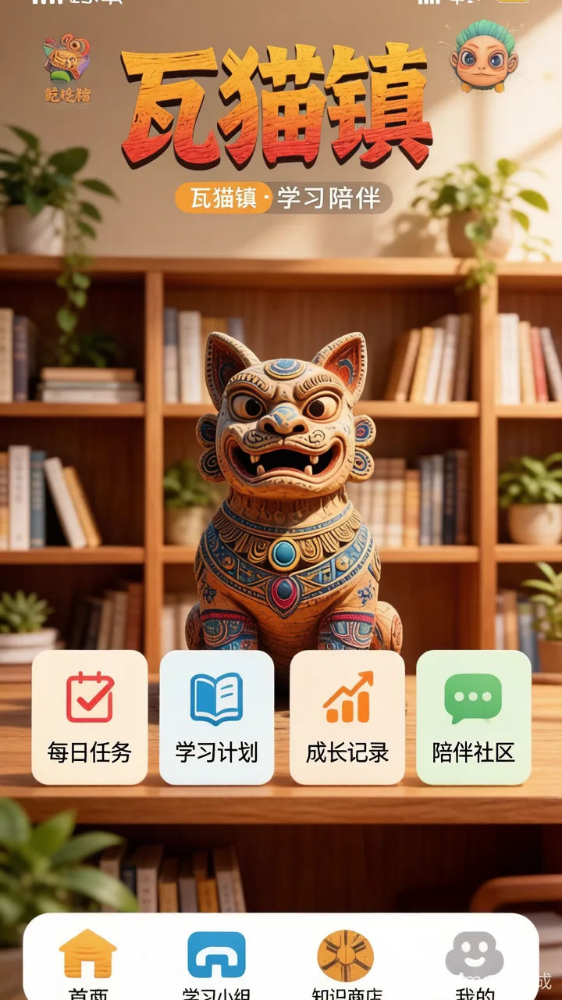

2026 暑假 · 校级重点实践项目
"语通苗乡，智助黔山"普通话推广 + 非遗活化 + 乡村振兴实践
实地调研 / 数据分析 / 报告撰写
- 赴贵州省黔东南苗族侗族自治州雷山县西江镇开展推普调研，完成问卷数据收集、整理与清洗，累计回收有效问卷 300+ 份，保障样本有效性与数据质量；
- 独立撰写访谈提纲（超 5,000 字），并参与调研报告撰写，聚焦国家通用语言文字赋能民族地区乡村振兴的路径，提炼政策建议与落地机制。
问卷 300+ 份访谈提纲 5000+ 字数据清洗乡村振兴
2025 · iCAN 大学生创新创业大赛 · 全国二等奖
爱奇艺 AIGC 短视频赛道 ·《柳泉怪谈》
视频脚本撰写 / 即梦 AI 视频生成
- 独立完成参赛短视频脚本撰写，围绕悬疑民俗题材构建叙事节奏与视觉分镜；
- 使用即梦 AI 进行视频生成与镜头迭代，探索 AIGC 工具在影视短片创作中的可控性与风格化表达。
AIGC 视频脚本创作即梦 AI
2025 · 第十六届全国大学生电子商务"创新、创意及创业"挑战赛 · 校级一等奖
瓦喵工坊 ·"瓦里喵气"云南瓦猫非遗文旅 IP
市场分析 / 营销策略 / 财务分析 / 申报书封面
- 完成项目市场分析与目标客群定位，梳理瓦猫非遗文化在年轻消费群体中的认知痛点与传播机会；
- 负责营销策略与财务分析模块，支撑商业计划书的可行性与落地路径；
- 设计申报书封面与视觉呈现，提升项目材料的专业度与辨识度。
非遗文旅市场分析财务模型视觉设计



2026 · "青创北京"挑战杯首都大学生创业计划竞赛 · 全国三等奖
数律智检 · 欠薪线索智能预警与协同监督平台
UI 界面设计 / 产品价值与功能设计 / 可行性分析
- 参与项目计划书撰写，聚焦检察监督场景下的欠薪线索智能识别、风险预警与跨部门协同治理；
- 负责平台 UI 界面设计，梳理检察官、协同单位经办人员等角色的核心操作路径；
- 撰写产品价值、功能设计与可行性分析，论证平台在数字检察与劳动者权益保护中的落地价值。
数字检察产品设计UI 设计可行性分析
科研助理 · 县域发展动态数据库建设
中央民族大学兴边富民战略研究院
县域发展动态数据库建设项目
- 担任科研助理，参与县域发展动态数据库建设，协助完成项目资料整理与数据库框架搭建；
- 独立完成 13 个县域的统计公报采集、口径核对与县域数据整理录入，保障数据时序连续、口径一致。
科研助理统计公报采集县域数据数据库建设